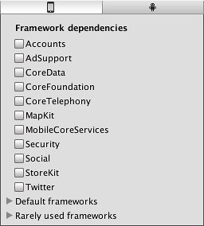

Plugin Inspector
Use the Plugin Inspector to specify the conditions under which Unity loads and references a plugin file. You can also specify various other platform-specific settings for a plugin.
Select a plugin file in the Project window to view the Plugin Inspector:

General
The Auto Reference setting controls how a plugin file is referenced by other assemblies and assembly definitions in the project.
If Auto Reference is checked, which is the default, then all predefined assemblies and assembly definitions automatically reference the plugin file. Uncheck Auto Reference if you want to explicitly declare references to the plugin instead.
You can declare references to a plugin file for an assembly definition using the Assembly Definition Inspector window. See Script Compilation and Assembly Definition Files for more information.
Important: when you uncheck Auto Reference you cannot reference a plugin from the predefined assemblies created for your project by Unity. These predefined assemblies contain all the scripts in your project that you have not assigned to another assembly using an assembly definition file. Only code included in an assembly created with an assembly definition file can reference classes, functions, or other resources in a plugin that has the Auto Reference property unchecked..
Set Auto Reference to false in order to limit the scope in which a plugin can be referenced by explicitly declare all references to that plugin. For example, if only one set of scripts in your project use a plugin, you could create an assembly definition file for those scripts and create an explicit reference to the plugin. Because the plugin is no longer automatically referenced throughout your project, other scripts in your project cannot mistakenly use the plugin. (More than one assembly can use the plugin, but all assemblies must explicitly declare the dependency.) Also, if you change the plugin, only the dependent assemblies must be recompiled, not your entire project.
You can also use explicit references to plugins to prevent plugins used in an Asset package from conflicting with other code in a project into which the package is imported.
Select platforms for plugin
Use the Select platforms for plugin setting to define the platforms with which a plugin file is compatible and should be used on. The list of platforms includes the Editor itself (for Play mode and for any scripts that run at edit time), Standalone, and platforms for which you have installed Unity build support, such as Android, iOS, and WebGL.
You can check Any Platform and, optionally, exclude individual platforms. Or you can uncheck Any Platform and, optionally, include individual platforms.
Platform settings
Once you have selected the platforms, you can specify additional options such as CPU type and specific OS from the separate Platform settings section below. This area of the Inspector window contains a tab for each selected platform. Some platforms have no settings, or just a few (such as CPU and OS selection).
When possible, the Inspector only shows settings that apply to the plugin type on a specific platform. For example, for a native plugin file with a .dll extension, the Inspector only shows the options that apply to Windows since such a plugin can only be used on Windows.
Note: Native plugins cannot be unloaded. If a plugin has already been loaded by the Editor, it remains loaded even after you change the settings for that plugin in the same Editor session. To unload the plugin, you must restart Unity.
Editor settings
Use the Editor platform settings to specify the CPU architectures and operating systems with which the plugin is compatible.

Most managed plugins are compatible with any CPU and OS, but native plugins are typically only compatible with a single OS and, depending on how they were compiled, might be compatible with only a single CPU architecture.
For instance, if you select CPU X86, Unity loads the plugin when you run an older, 32-bit version of the Editor, but not when you run a 64-bit version.
Similarly, if you select OS Windows, Unity loads the plugin when running the Editor on Windows systems, but not on OS X or Linux systems.
Standalone settings
For the Standalone platforms, Windows, OS X, Linux, you can choose the CPU architectures with which a library is compatible. Managed libraries are typically compatible with any OS and architecture unless they access specific system APIs. Native libraries are only compatible with a single OS, but can be compatible with the 32-bit, the 64-bit, or both CPU architectures.
See also: Player settings for Standalone platforms.
Universal Windows Platform
Universal Windows Platform plugin settings are covered in their own sections. See:
Universal Windows Platform: Plugins on .NET Scripting Backend
Universal Windows Platform: Plugins on IL2CPP Scripting Backend
Android
For plugin files that are potentially compatible with Android, you can choose the CPU architecture. The chosen architecture must match the architecture for which the library was compiled. Unity does not validate whether you choose the correct setting.
iOS and tvOS
The iOS and tvOS settings allow you to specify which iOS frameworks a plugin depends upon, if any.

For dynamically loaded libraries, as well as for bundles and frameworks containing dynamically loaded libraries or any assets and resources that need to be loaded at run time, check the Add to Embedded Binaries option. When you check this option, Unity sets the Xcode project options to copy the plugin file into the final application package.
For plugin source code files, which must be compiled as part of the build, you can specify any flags needed when compiling in the Compile Flags field.
## Define Constraints
Use the Define Constraints setting to specify symbols that must be defined (or undefined) in order for the plugin file to be used.
Unity only loads and references a plugin if all the Define Constraints are satisfied. Constraints work like the #if preprocessor directive in C#, but on the assembly level instead of the script level. All the symbols in the Define Constraints setting must be defined for the constraints to be satisfied. You can also specify that a symbol must be undefined by prefixing it with a negating ! (bang) symbol. For example, if you specify the following symbols as your Define Constraints:

the constraints are satisfied when the symbol ENABLE_IL2CPP is NOT defined and the symbol UNITY_2018_3_OR_NEWER IS defined. Or to put it differently, this assembly is only loaded and referenced on non-IL2CPP scripting runtimes for Unity 2018.3 or newer.
You can use any of Unity’s built-in define symbols or any symbols defined in the project’s Scripting Define Symbols Player setting. See Platform dependent compilation for more information, including a list of the built-in symbols. Note that the Scripting Define Symbols settings are platform-specific. Make sure that you define the necessary symbols on all the relevant platforms.
Plugin detection
Unity detects whether a file in your Assets folder is a plugin by its file extension. It treats files with the following extensions as plugins:
- .dll
- .winmd
- .so
- .jar
- .aar
- .xex
- .def
- .suprx
- .prx
- .sprx
- .rpl
- .cpp
- .cc
- .c
- .h
- .jslib
- .jspre
- .bc
- .a
- .m
- .mm
- .swift
- .xib
Unity also treats certain folders as bundle plugins. Unity does not look for additional plugin files within such folders, so everything within the folder is considered a single plugin. Unity detects whether a folder is a bundle plugin when it has one of the following extensions:
- .framework
- .bundle
- .plugin
Finally, Unity treats folders found with a parent path matching exactly Assets/Plugins/Android/ as an Android Library plugin folder. Unity handles such folders in the same way as folders with the special extensions: .plugin, .bundle and .framework.
Default settings
Unity sets defaults for the import settings of a plugin file according to the folder where the plugin is located:
| Folder | Default settings |
|---|---|
| Assets/../Editor | Plugin will be set only compatible with Editor, and won't be used when building to platform. |
| Assets/../Editor/(x86 or x86_64 or x64) | Plugin will be set only compatible with Editor, CPU value will be assigned depending on the subfolder. |
| Assets/../Plugins/(x86_64 or x64) | x64 Standalone plugins will be set as compatible. |
| Assets/../Plugins/x86 | x86 Standalone plugins will be set as compatible. |
| Assets/Plugins/Android/(x86 or armeabi or armeabi-v7a) | Plugin will be set only compatible with Android, if CPU subfolder is present, CPU value will be set as well. |
| Assets/Plugins/iOS | Plugin will be set only compatible with iOS. |
| Assets/Plugins/WSA/(x86 or ARM) | Plugin will be set only compatible with Universal Windows Platform, if subfolder is CPU present, CPU value will be set as well. Metro keyword can be used instead of WSA. |
| Assets/Plugins/WSA/(SDK80 or SDK81 or PhoneSDK81) | Same as above, additionally SDK value will be set, you can also add CPU subfolder afterwards. For compatibility reasons, SDK81 - Win81, PhoneSDK81 - WindowsPhone81. |
| Assets/Plugins/Tizen | Plugin will be set only compatible with Tizen. |
| Assets/Plugins/PS4 | Plugin will be set only compatible with Playstation 4. |